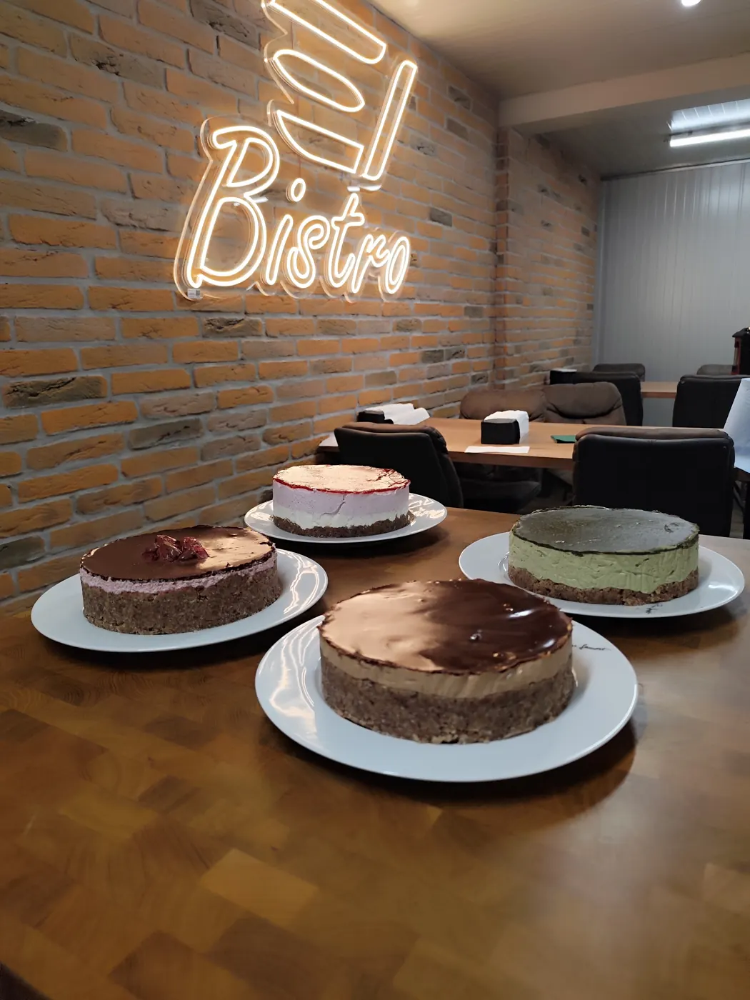
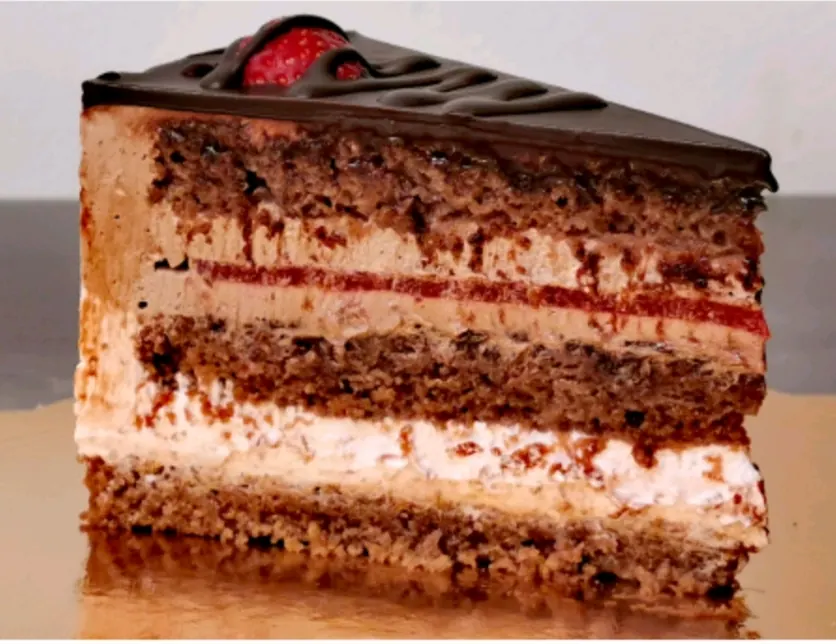
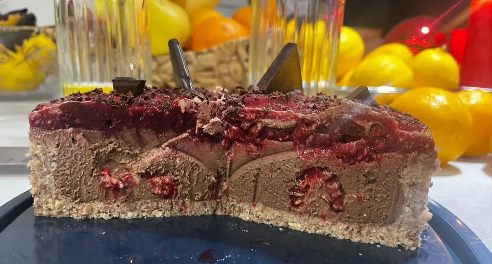
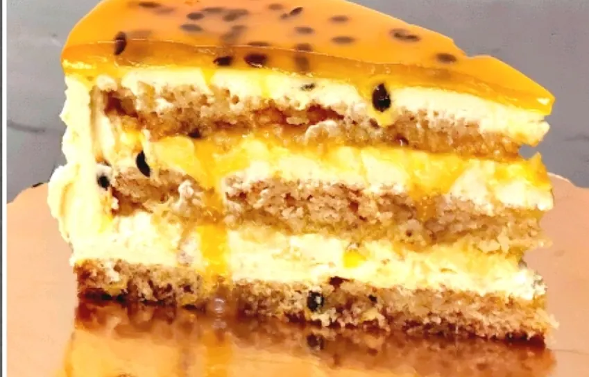

Kjer »vegansko« pomeni
polno okusa.
Sem Roman Adler, veganski slaščičar iz Maribora. Pečem od leta 2019 — torte brez jajc in mleka, ki jih naročajo tudi tisti, ki z veganstvom nimajo nič.

Leta 2019 sem iskal vegansko torto, ki bi bila res dobra. Ne »dobra za vegansko« — dobra. Nisem je našel, zato sem jo začel peči sam. Prvi biskviti so šli v smeti, potem pa je prišel tisti, ki je držal skupaj in bil sočen.
Jajca sem zamenjal z ovsenim mlekom in vinskim kamnom, maslo z rastlinsko margarino, smetano s kokosovo in rastlinsko smetano. Lešnike, orehe in pistacijo pa sem pustil — pravih oreščkov ne zamenja nič.
Od domače kuhinje do slaščičarne
Ko so torte začeli naročati prijatelji prijateljev, je bilo jasno, da hobi ni več hobi. Danes delam kot registrirana slaščičarna v Mariboru, s HACCP sistemom in sledljivostjo vsake sestavine. Vsaka torta dobi deklaracijo z alergeni, kot se spodobi.
Ponudba je zrasla na več kot 25 okusov na štirih biskvitih. Nekatere torte so klasika — čokoladna, lešnikova. Druge so nastale, ker je kdo vprašal: »Pa bi šlo tudi s pistacijo?« Šlo je.
Zakaj Roman's Cakes
Brez jajc, mleka, masla in medu — brez izjem. To ni trženjski dodatek, ampak razlog, zakaj slaščičarna sploh obstaja.
Vsaka torta nastane za konkretno naročilo, dan ali dva pred prevzemom. Nobene zaloge v zamrzovalniku.
Registriran obrat, vodena sledljivost surovin, deklaracija s sestavinami in alergeni pri vsaki torti. Pri alergijah veste, kaj jeste.
Napis, jedilna slika, brezglutenska izvedba ali okus brez oreščkov. Poveste, kaj rabite, in najdeva rešitev.



Skupaj narediva vašo torto.
Pišite, pokličite ali izpolnite obrazec. Odgovorim v enem dnevu.